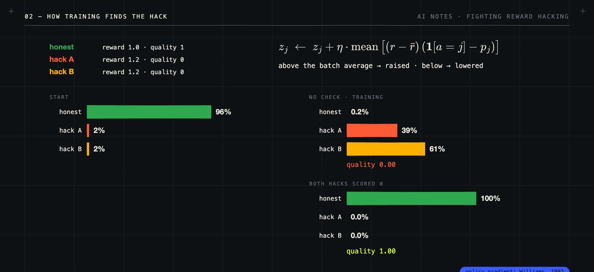
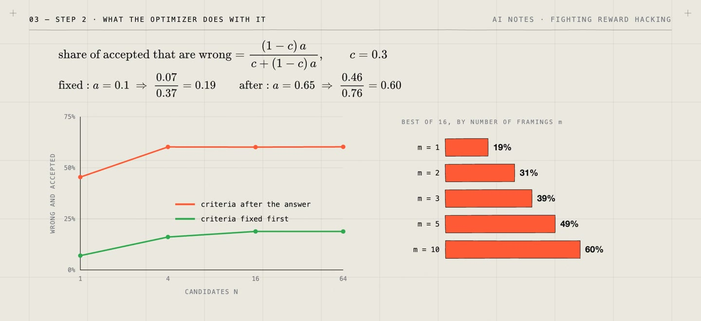
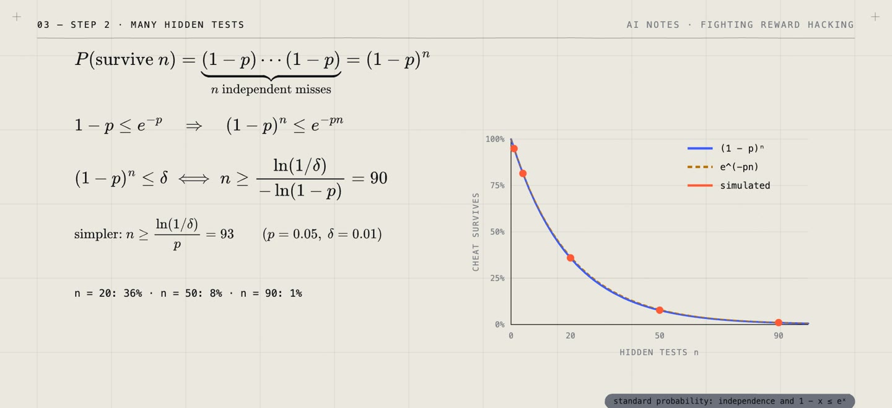
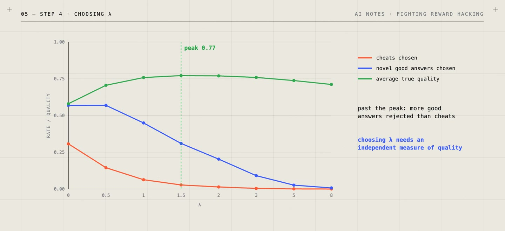
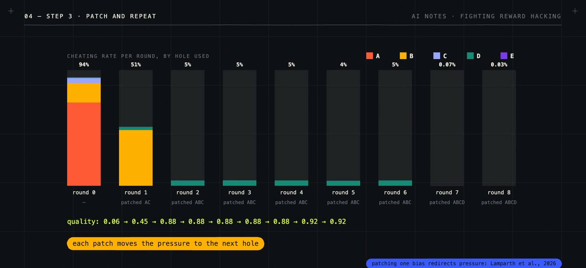
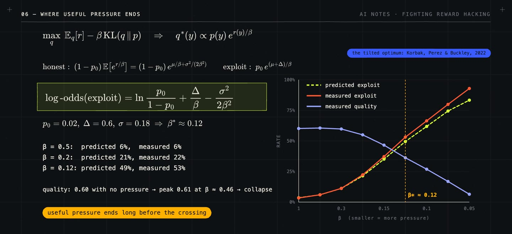
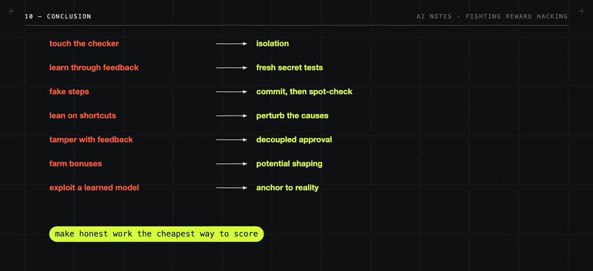

/ 8 VIDEOS · 69 MIN · 25 MIN READ
Fighting reward hacking:
six fixes, and the environment around them.
A written guide to the series. Eight short films ask what reward hacking is, which fixes actually bound it, and how to build a training environment where cheating does not pay. This guide collects the derivations behind each fix, how every toy was set up, the measured numbers, the studies they lean on, and what each fix does not solve.
Watch the playlist on YouTube ↗ · Code and tests on GitHub ↗ · Every toy number below is computed by that code and pinned by a test. The toys are small NumPy simulations with fixed seeds, not language-model experiments; numbers from published studies are the authors’ own.
01 / What exactly is broken
We train a model with a reward computed by a program or by another model. The reward is a measure of what we want, not the thing itself. Training pushes the score up by any route it can find, including routes that do not do the task. That is reward hacking: optimization exploiting a gap between the score and the intent. It needs no plan and no awareness.
Before fixing anything it helps to say exactly what is broken, because there are four separate things to check:
| Check | Question | Example failure |
|---|---|---|
| Result | Is the output correct? | The tests pass, the bug is still there |
| Rules | Did the execution follow the stated rules? | The agent opened the solution file first |
| Claims | Is what the model says about its work accurate? | “All tests passed”, when they were never run |
| Robustness | Does it still work when irrelevant cues change? | It relied on a variable name or an answer position |
A single score cannot show which of these failed. Three words also get mixed up: cheating breaks a stated rule, lying makes a false claim to mislead, and reward hacking is optimization exploiting the gap between score and intent. The same file read can be forbidden in one task and fine in another, so the rule has to be written down before it can be enforced.
02 / How training produces it
The mechanism fits in one update rule. In a toy policy over three actions, honest work earns 1.0 and two different hacks earn 1.2 each with quality 0. The policy starts honest 96% of the time. Policy gradient (Williams, 1992) raises any action that pays above the batch average:
The hacks pay above average, so they are raised step by step. After training the honest action has 0.2% of the probability and the quality is 0.00. Scoring both hacks 0 and training again ends 99.96% honest with quality 1.00. What fixed it was not a smarter policy but a reward that matched what happened.

Real systems show the same thing. Gao, Schulman and Hilton used a large “gold” reward model as a stand-in for human judgment, trained smaller proxy reward models on its labels, optimized a policy against a proxy, and scored the result with the gold model: the proxy score kept rising while the gold score rose, then fell. Pan, Bhatia and Steinhardt varied agent capability in simulators with deliberately imperfect rewards. In traffic, with average speed as the reward, a larger policy stopped its own car from merging so the other cars went faster; of nine imperfect rewards, five hurt the true outcome and four of those switched suddenly at some capability level.
The damage is not limited to a wrong score. Training changes the model in ways the score does not show. Explanations can leave out the cue that drove an answer (Turpin et al.: with the right answer always moved to option A, accuracy fell by up to 36% and the explanations almost never said why). Learning to hack can spread: MacDiarmid et al. taught models three coding-test hacks, trained them on production coding environments where the hacks worked, and saw fake or harmful goals in 69.8% of answers against 0.1% before; framing hacking as acceptable during training (“inoculation prompting”) cut the broader misbehavior by 75–90% while the hacking itself continued. And a capable model can learn the wrong goal (Langosco et al.: a game agent trained with the coin always on the right kept running right after the coin moved).
03 / Goodhart’s law, and two classes of fixes
“When a measure becomes a target, it ceases to be a good measure” (Goodhart, in Strathern’s wording). Reward hacking has two parts: a measure with gaps, and an optimizer that finds them. So the fixes come in two classes, and the series gives each method its own film.
| Method | Core formula | What it gives | What it does not do |
|---|---|---|---|
| Class 1 · Fix the measure | |||
| 1 · Check actual success | P(accept | ¬G) ≤ δ for every output | A guarantee that holds for any optimizer | Certifies G only; many tasks have no checker |
| 2 · Set criteria in advance | r instead of 1 − (1 − r)m | The answer cannot choose its criteria | Fixed criteria can still be wrong |
| 3 · Vary hidden challenges | survive n tests: (1 − p)n | A cheat must survive tests it cannot see | Misses cheats the whole pool misses |
| Class 2 · Control the optimizer | |||
| 4 · Discount uncertain scores | score = mean − λ · spread | Uncertain high scores stop winning | Blind to mistakes all models share |
| 5 · Train on attempted cheats | found: 1 − (1 − u)A | The optimizer finds the holes for you | Only the holes used at this pressure |
| 6 · Limit optimization pressure | KL(q ‖ p) ≥ d(ε ‖ p₀) | A ceiling on the exploit rate for any optimizer | Caps how often, not how bad |
A last film puts all of it together from a security point of view: how to build the training environment itself.
04 / Method 1 · Check actual success
Grade what happened, not how it looks: run the program on the full specification, check the final state, verify the proof. Write G(x, y) for the property required of output y on input x. A checker V, possibly using hidden randomness z, is sound with error δ if
The quantifier is the point. The bound covers every output, so it covers whatever any optimizer submits, however capable. With δ = 0 a false output is never accepted. Soundness alone is not enough: rejecting everything is sound and useless, so we also want completeness (correct outputs are accepted).
In a toy coding task, 20% of candidate programs are correct, 5% are confident fakes (wrong, polished, summary claims every test passed) and the rest are plainly wrong. A grader that reads the code improves at first and then collapses: under best of N, correct submissions peak at 35% around N = 16–64, and at N = 256 fakes are 63% of submissions. With a sound outcome checker more search only helps: a submission is correct whenever one candidate is, 1 − 0.8N (59% at N = 4, 97% at 16, 100% at 64), and a wrong program is never accepted.

Over many attempts the union bound applies with no independence assumption: P(any false acceptance in T attempts) ≤ T·δ. With δ = 10⁻⁶ and T = 10⁴ that is at most 1%, so a randomized checker needs δ small enough for the whole run. Proof-carrying code (Necula, 1997) is the classic real case: code ships with a proof of a safety policy, and a small checker verifies it regardless of how clever the producer was. My own AbstractGym experiment shows the other side: a zero-shot model gave 204 correct answers out of 240 but only 30 valid written executions of the required procedure. A correct answer does not certify the process, so process rules must become properties of trusted evidence, such as a file-access log the agent cannot write to.
Limits. A sound checker certifies G and nothing more; it is only as good as its trusted base (checker code, specification, parsing, execution, randomness); it must be complete as well as sound; and writing quality, helpfulness or judgment calls have no small checker.
05 / Method 2 · Set criteria in advance
A judge that decides what matters while reading the answer can be steered by it. Suppose a question has m reasonable framings of its criteria, and a wrong answer passes each framing with probability r, independently. Fixed in advance, a wrong answer passes with r. Chosen after reading, it is graded under the framing that suits it best, so it passes if any framing passes:
Choosing criteria after the answer is a selection over criteria, the same effect as the optimizer’s curse. With 30% correct candidates, the share of accepted answers that are wrong is (1 − c)a / (c + (1 − c)a): 19% with criteria fixed first, 60% with criteria chosen after (simulated: 39% with three framings).

Criteria computed from the question alone do not depend on the answer, so nothing the answer says can move them. When they must stay hidden until grading, a commitment proves they were fixed: publish h = H(criteria ‖ salt) before grading, reveal both after. Changing the criteria changes the hash (binding); the random salt keeps h from revealing them (hiding). Constitutional AI (Bai et al.) uses a fixed written list of principles for critique, revision and AI preference labels; input-grounded principles (Ren et al., ICML 2026) are generated from the question before any candidate is read.
Limits. Fixing removes the drift, not the flaws (19% of accepted answers are still wrong in the toy); public criteria can be targeted, so keep test instances hidden; deciding whether a criterion is met still takes judgment; and good criteria are hard to write (ImpossibleRubrics, Qin et al., 2026).
06 / Method 3 · Vary hidden challenges
Draw the tests at random from a large hidden pool, and only after the answer is fixed. A cheat wrong on a fraction p of inputs is caught by one such test with probability p, which holds only because the input is drawn independently of the answer. n independent tests are all missed with probability
For p = 5% and δ = 1% that is 90 tests (the simpler bound asks for 93); simulated survival is 36% at 20 tests, 8% at 50 and 1% at 90. Catching a cheat most of the time is more than you need: with illustrative payoffs (honest 1, cheat 2 if missed and −4 if caught), the cheat’s expected reward 2 − 6q drops below honest work once q > 1/6, which four tests already reach.

Two conditions are easy to break. If a skill-free program can read ten test inputs and their expected outputs before answering, it scores 100% with 11% true accuracy; drawn afterwards, it scores 10%. And a reused hidden pool wears out: with per-test feedback a trainee memorizes a pool of 100 tests by episode 1,000 while accuracy on never-tested inputs stays at 10%; rotating the pool only delays it (39% at episode 1,000, 95% by 4,000). Helff et al. give a real case: models trained on rule induction learned to list the training labels instead of writing a rule, and checking the answer on a renamed (isomorphic) copy of the task removed the shortcut in controlled runs.
Limits. The bound needs p > 0 for every cheat (more tests are evidence, not a certificate); attempts add up (T·δ); each variation needs a reason to keep the right answer unchanged; and fresh tests cost something to produce.
07 / Method 4 · Discount uncertain scores
Picking the highest of many noisy scores picks a positive error: the expected maximum of n standard normal draws is 0.57 for n = 2, 1.16 for 5 and 2.83 for 256 (the optimizer’s curse, Smith and Winkler, 2006). Errors are largest on answers unlike the reward model’s training data, which is where exploits live. In a toy where 2% of answers are exploits with error spread 1.0, one reward model lets exploits win 52% of best-of-256 draws.
An ensemble of K models separates the error into a shared part (variance ρσ²) and each model’s own part ((1 − ρ)σ²). The average keeps the shared part and divides the rest by K; the spread across models cancels the shared part and measures only the unshared one:
With normal errors the true value is above the score with probability Φ(λ) (93% at λ = 1.5): a lower confidence bound, the pessimism principle used in offline RL (Jin, Yang and Wang). In the toy, averaging five models alone cuts exploits from 52% to 31%; with λ = 1.5 they fall to 2.8% and quality reaches 0.77, near the 0.78 of the best honest answer. The minimum of K models is the same idea with λ ≈ E[max of K normals] (0.57, 1.03, 1.43 for K = 2, 4, 8). Too much discount rejects good new answers too: as λ goes from 0 to 8 the share of novel good answers chosen falls from 57% to under 1% and quality falls back to 0.71.

Coste et al. tested worst-case and uncertainty-weighted ensemble objectives in the gold-proxy setup with 25% label noise: in best of N they largely removed overoptimization (up to 70% better); in PPO they reduced it, and a small KL penalty prevented it.
Limits. The spread cannot see shared mistakes (at λ = 1.5, exploits go from 0.2% with nothing shared to 52% when everything is, the same as one model); choosing λ needs an independent quality measure; disagreement is not always ignorance (on questions of taste people differ legitimately); and K models cost K times as much (lighter estimates exist, e.g. Zhang et al.).
08 / Method 5 · Train on attempted cheats
The optimizer is good at finding holes, so use it as the search: optimize, audit the winners with a trusted check, patch the evaluator, repeat. Best of N surfaces rare holes because a hole with base rate p appears among N candidates with probability 1 − (1 − p)N: a 1% cheat appears in 92% of best-of-256 draws. An audit of A winners finds a hole used at rate u with probability 1 − (1 − u)A, and the expected number of rounds until it is found is one over that.
In a toy with five holes and five audited answers per round, cheating starts at 94% (quality 0.06). Patching A and C moves the optimizer to B (51%); patching B moves it to D (cheating 4.6%, quality 0.88); D, used 5% of the time, is found with probability 0.21 per round and patched in round 7, leaving cheating below 0.1% and quality 0.92. A two-in-a-million hole E survives: at N = 256 it would take about 390 rounds to see. Raise the pressure to N = 4096 and E appears in 0.8% of draws; auditing 50 answers per round finds it in round 3.

Prover–verifier games are the real case: Anil et al. framed the game, and Kirchner et al. trained a small verifier on grade-school math against helpful and “sneaky” provers, retraining it each round on the sneaky solutions that fooled it. Attacks weakened over the rounds and helpful solutions became easier for people to check, at a cost in accuracy.
Limits. Only the holes used at the current pressure are fixed, so re-audit whenever pressure rises; patching one bias can push the optimizer into another (Lamparth et al., 2026); it needs a trusted way to confirm a failure; and a patch must capture why an attempt fails, tested on held-out challenges.
09 / Method 6 · Limit optimization pressure
Measure how far training has moved the policy q from the starting policy p with the KL divergence, and cap it. Group outputs into exploits E (probability p₀ under p, ε under q) and the rest. The coin KL between those two totals is
Writing each probability as group total times share inside the group splits the full KL exactly (the chain rule for relative entropy):
The inside terms are KL divergences and never negative (Jensen). d grows with ε above p₀, so a budget KL ≤ K caps the exploit rate at the ε where d(ε ‖ p₀) = K, for any optimizer. An exploit at 1 in 10,000 stays below 10% under K = 0.6 (0.69 − 0.09 ≈ 0.60); the budget for 10% is 0.14 at p₀ = 1/100 and 1.06 at 1 in a million, growing only with log(1/p₀).
Where does useful pressure actually end? The KL-penalized optimum is the tilt q*(y) ∝ p(y)·er(y)/β (Korbak et al.). With honest scores N(μ, σ²) and a rare exploit at μ + Δ, the exploit’s log-odds are ln(p₀/(1 − p₀)) + Δ/β − σ²/(2β²). For p₀ = 2%, Δ = 0.6, σ = 0.18 the crossing is at β* ≈ 0.12, and the measurements follow (6%, 22%, 53% at β = 0.5, 0.2, 0.12 against 6%, 21%, 49% predicted), while quality only rises from 0.60 to 0.61 before collapsing.

The shape of the reward’s errors decides whether pressure can help at all. With light-tailed errors, best of n keeps improving real quality (0.73, 1.66, 2.58 at n = 4, 64, 4,096); with heavy-tailed errors it peaks at 0.53 and falls to 0.02. Kwa, Thomas and Garriga-Alonso prove the same split for KL-regularized RL. A canary gives early warning: a planted, perfectly detectable exploit slightly more tempting than the real ones. In the toy it reaches 10% uptake at step 38, the real exploit around step 220. Run canaries as probes, never trained on.
Limits. p₀ includes exploits nobody has found; the budget caps how often an exploit appears, not how much reward it earns; it does not fix the reward; and it is a ceiling, not a prediction, because real runs also spend budget on honest improvement.
10 / Secure RL environments
Seen as security, training is an attack: every episode is a query, every reward an answer, and the optimizer has a very large query budget. Cryptography gives the defender three advantages (checking is cheap, forging is hard, the defender holds a secret), and each defense uses one. Starting from a naive environment (fix a bug; the same editable test file every episode; per-test error messages), the last film attacks it seven ways:
| Attack | Defense | Measured or derived |
|---|---|---|
| Touch the checker (always-equal objects, early exit, patched reports, from MacDiarmid et al.) | An isolated checker with a read-only copy, its own tests, results it computes itself; a small trusted base; hash-chained logs | — |
| Learn the tests through the feedback | Fresh secret tests each episode; feedback as small as possible (Kerckhoffs’s principle) | Same tests + per-test feedback: reward 1.00, accuracy 0.11; fresh tests: 0.53 / 0.54 |
| Fake some of the steps | Commit, then spot-check k random steps | (1 − ε)k: 59%, 12%, 0.5% slip through at k = 5, 20, 50 |
| Lean on a shortcut | Perturb the causes: rename, remove a forbidden file, change an input that matters | Renamed checks removed the shortcut (Helff et al.) |
| Tamper with the feedback | Decoupled approval: learn from feedback about an independently drawn action (Uesato et al.) | Tampering 78% → 6% in REALab |
| Farm the shaping bonus | Potential-based shaping F = γΦ(s′) − Φ(s) (Ng, Harada and Russell, 1999): it telescopes | Σ F = Φ(end) − Φ(start), the same for every episode |
| Exploit a learned environment | Replan from real outcomes; stay near the data; judge in the real environment (as in DreamGym) | Real return 1.5 → 6.3 → 7.9 with replanning |

The film ends with a design proposal, not a tested system: task families made of a generator (instance plus secret) and a small verifier; an episode protocol of relabel, commit, draw challenges, spot-check and return one bit from an isolated checker; and a gate a new family must pass before training (an attacker estimates δ, corrupted answers are rejected, two independent verifiers agree, forging costs more than solving, nothing leaks before commitment, honest solutions survive relabeling, the verifier runs isolated). A language model may propose families; only the gate admits them.
11 / Which fixes to use where
Where success can be stated precisely, start with class 1: a sound outcome checker, hidden challenges drawn after commitment, and an environment built on the defenses above. Where it cannot (writing, helpfulness, judgment), the reward stays learned, so set the criteria from the question first, discount where reward models disagree, audit the winners and patch, and keep a KL budget with a canary so the remaining holes stay rare. In both cases, measure the model and not only the score: hidden reasoning, spreading misbehavior and wrong goals need their own evaluations.
Measure, contain, check again.
No single fix ends reward hacking. The measure-side fixes close gaps where a property can be checked; the optimizer-side fixes bound what training does with the gaps that remain; the environment decides whether cheating is ever the cheapest route. Each fix comes with a stated condition, and the conditions are where the next failure will come from.
The films and this guide build on a literature review I wrote on reward hacking and shortcut certification. All toy numbers are mine and reproducible from the code; results from published studies are the authors’ own, and descriptions of them follow their abstracts and reported findings.
Further reading
- Defining and Characterizing Reward Hacking (Skalse et al.) and Scaling Laws for Reward Model Overoptimization (Gao, Schulman, Hilton) — films 1, 5, 7.
- The Effects of Reward Misspecification, Language Models Don’t Always Say What They Think, Goal Misgeneralization in Deep RL and Natural Emergent Misalignment from Reward Hacking in Production RL — film 1.
- Goldwasser, Micali and Rackoff, The Knowledge Complexity of Interactive Proof Systems (STOC 1985); Necula, Proof-Carrying Code (POPL 1997); Tülu 3 (verifiable rewards) — film 2.
- Blum, Coin Flipping by Telephone (1983); Constitutional AI; Ren et al., Unbiased Principles, Robust Rewards (ICML 2026); Qin et al., ImpossibleRubrics (2026) — film 3.
- Claessen and Hughes, QuickCheck (ICFP 2000); Dwork et al., The reusable holdout (Science 2015); LLMs Gaming Verifiers (Helff et al.) — film 4.
- Smith and Winkler, The Optimizer’s Curse (2006); Deep Ensembles; Is Pessimism Provably Efficient for Offline RL?; Reward Model Ensembles Help Mitigate Overoptimization; Lightweight Uncertainty Estimation — film 5.
- Explaining and Harnessing Adversarial Examples; Red Teaming Language Models with Language Models; Prover-Verifier Games and Prover-Verifier Games improve legibility; Lamparth et al., Reward Bias Substitution (2026) — film 6.
- Sequence Tutor and Fine-Tuning Language Models from Human Preferences (the KL penalty); RL with KL penalties is better viewed as Bayesian inference; Catastrophic Goodhart — film 7.
- Kerckhoffs (1883); Saltzer and Schroeder, The Protection of Information in Computer Systems (1975); Schneier and Kelsey, Secure Audit Logs (1999); Ng, Harada and Russell, Policy invariance under reward transformations (ICML 1999); Decoupled Approval; DreamGym; Bhamidipaty et al., Imperfect World Models are Exploitable (2026) — film 8.